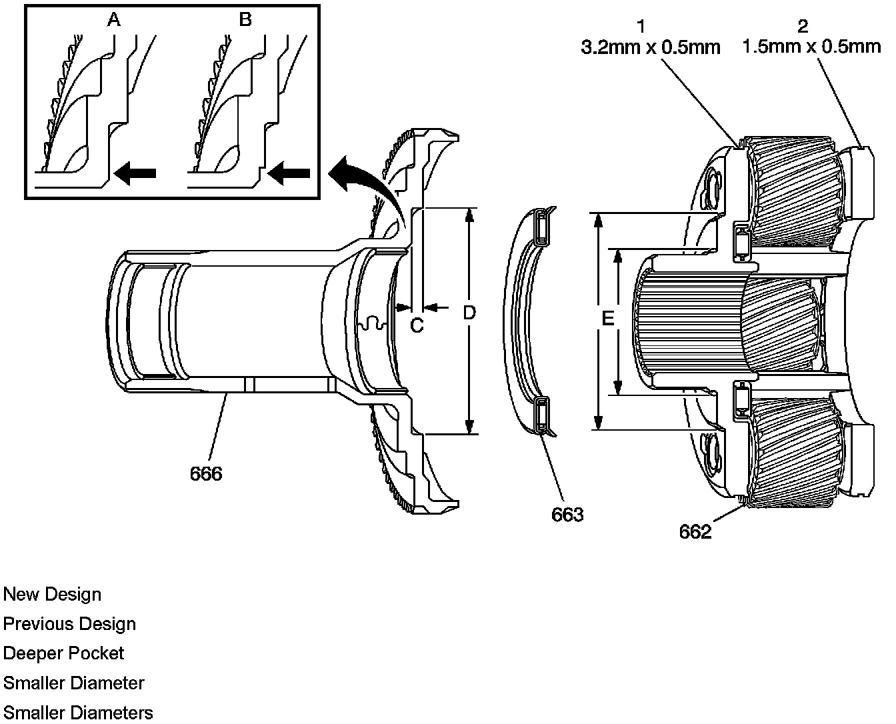
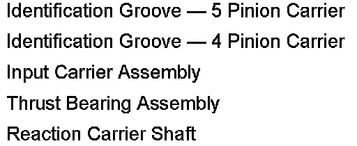

A/T - 4L60-E/4L65-E/4L70-E Production Update
Bulletin No.: 07-07-30-008Date: May 01, 2007
INFORMATION
Subject:
4L60-E/4L65-E/4L70-E Automatic Transmission Product Update
Models:
2005-2008 Passenger Cars and Light Duty Trucks
2005-2008 HUMMER H2, H3
2005-2008 Saab 9-7X
with 4L60-E14L65-E14L70-E Automatic Transmission (RPOs M30, M32, M33 and M70)
The purpose of this bulletin is to update technicians to changes in the 4L60-E, 4L65-E and 4L70-E automatic transmission.
Input Carrier, Reaction Carrier Shaft and Bearing Changes
The parts contained in this change may not be interchangeable with the parts contained in the transmission being serviced. When servicing the transmission, use the correct parts. Do not mix parts.
Failure to use the correct parts will cause improper function and possible transmission distress.


This change contains a new, thicker thrust bearing with increased capacity and angled lip added for assembly error proofing. The reaction carrier shaft bearing pocket and the input carrier bearing surface have been modified to accommodate the new bearing. Each part has specific features to allow identification from the prior design.
All transmissions with a build date of 3-12-07 (Julian date 7071) and later will have the new parts.
Anytime that an old bearing is being replaced with the new design bearing, the new input carrier assembly and reaction carrier shaft must be used. The old design bearings will remain available from SPO.
If the old design reaction carrier shaft or input carrier assembly need to be replaced, the new design parts will need to be used. All three parts will back fit past models.

Disclaimer